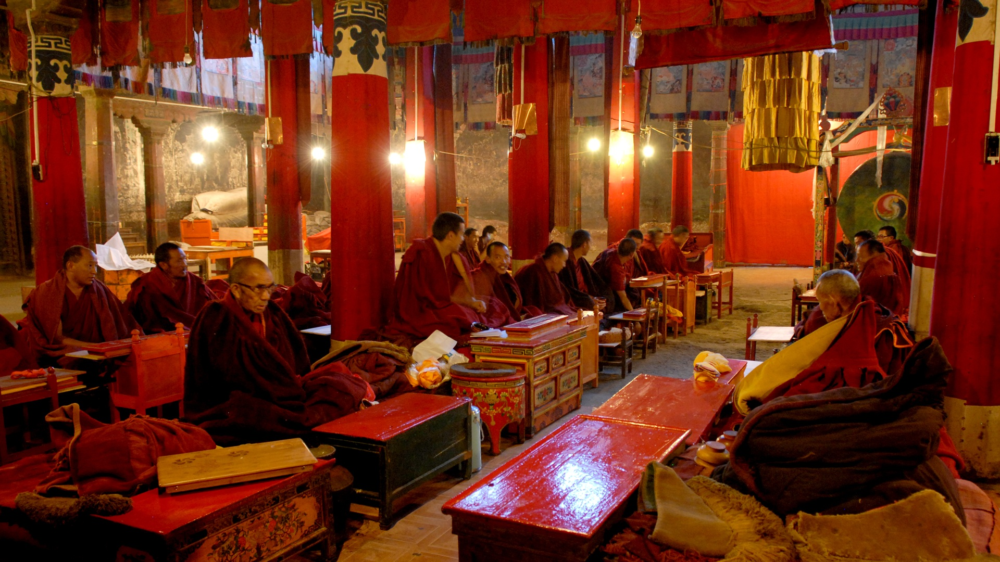
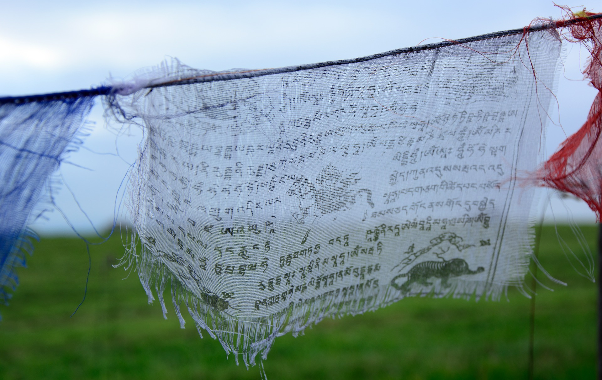
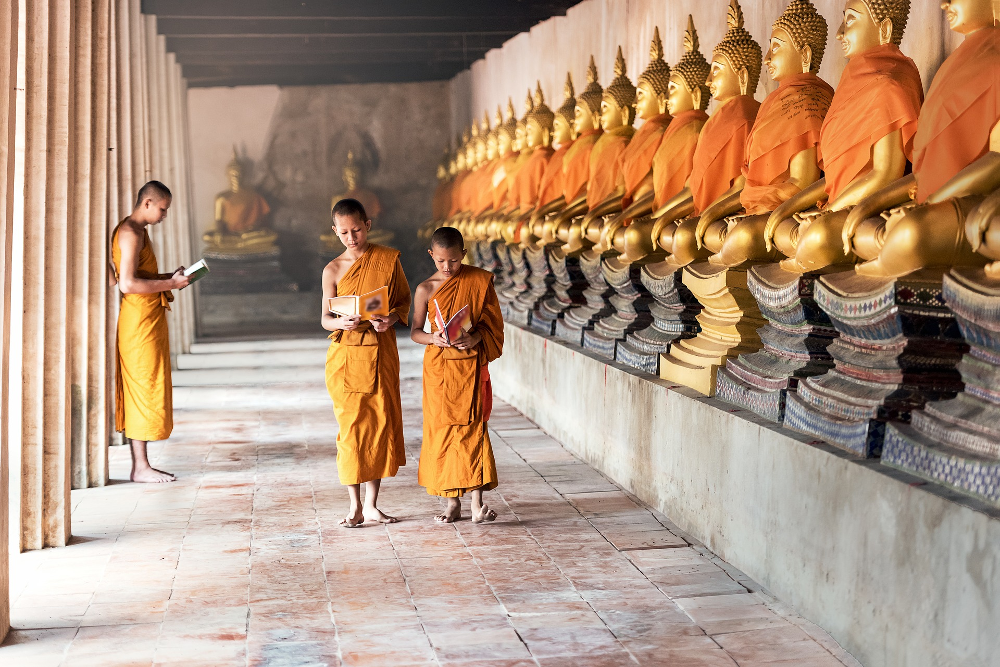
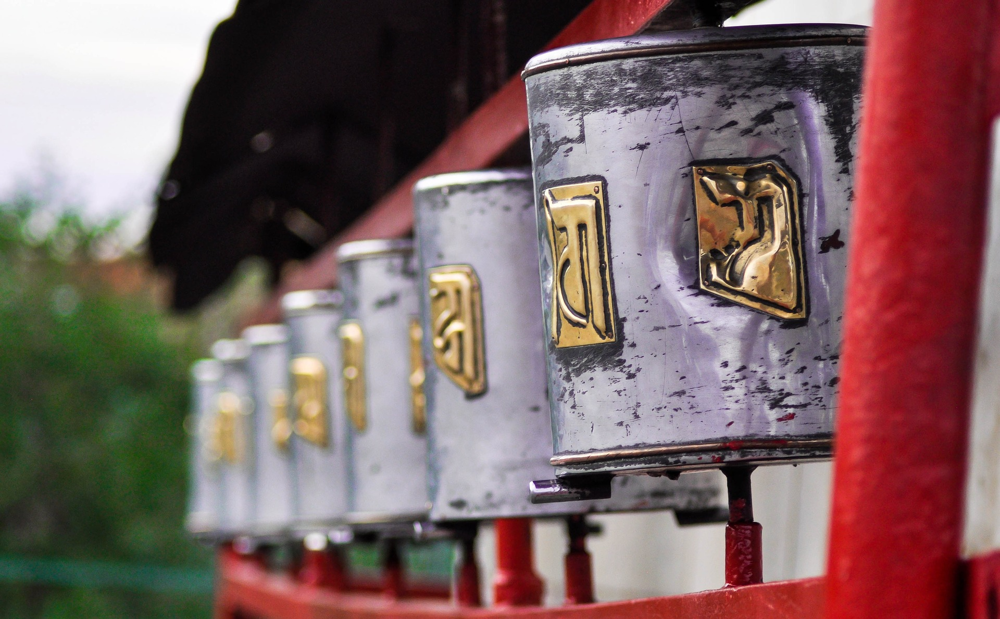
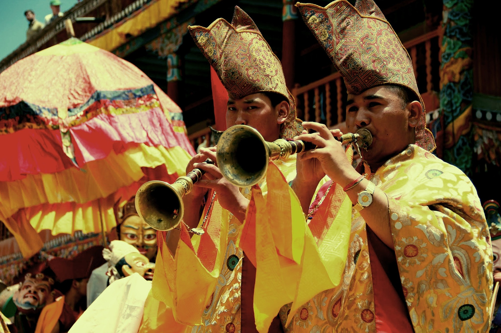

Una nació és més que un estat, el que és més que una tribu, que és més que un clan, que és més que una família. L’única unitat política comuna, més gran que una nació, solia dir-se “imperi”, encara que avui hi ha entitats que es diuen “Estats Units” i “Unió de Repúbliques”. Els descendents de la nació anglesa, els Anglos i Sajones, i Celtes i Normandos, per nomenar unes poques tribus, en si, les amalgames de clans, poden pensar de si mateixos com a membres d’una sola nació. De vegades, els escocesos tenen dificultat per pensar en ells com a part de la nació anglesa, i els irlandesos no poden, tot i que tots dos grups van ser part de la Gran Bretanya durant segles.
El tibetà és molt diferent al xinès. Solia pertànyer a la família “tibetana-burmana”, encara que últimament alguns lingüistes utilitzen l’etiqueta “sinó-tibetana” (per incloure el sínic, dáico, bódico [tibetà] i birmà, formant diferents subfamílies amb els dos primers i els dos últims) . Aquests jocs de terminologies no alteren la diferència fonamental en els idiomes. El xinès s’escriu amb ideogrames i és monosíl·lab, sense declinació i tonal. El tibetà utilitza un alfabet per a la seva escriptura i és polisílabo; es declina segons cas, declinació i estructures per gènere adaptades del Sànscrit i no és tonal pel que fa a la semàntica. El tibetà pren prestades algunes paraules dels idiomes indo, nepalès i mongol. Després de 30 anys d’ocupació, un simple grapat d’actuals colons xinesos parla tibetà, encara que la generació més jove dels tibetans ha estat forçada a aprendre el xinès col·loquial.
La majoria dels tibetans són creients del budisme tibetà o d’una col·lecció de tradicions nadiues anomenades bön (que també han estat absorbides pel budisme tibetà). Hi ha una minoria de tibetans islàmics i cristians a l’est del Tibet i al nord-oest de Yunnan, a la Xina. Avui en dia, es pot veure els tibetans col·locant pedres mani en llocs públics. Els lames tibetans budistes i böns juguen un rol cabdal en la vida dels tibetans, conduint cerimònies religioses i cuidant dels monestirs. Els peregrins planten banderes de pregàries en els terres sagrats com a símbol de bona sort. La roda de l’oració és un mitjà per a simular el cant d’un mantra tot girant físicament l’objecte diverses vegades en el sentit de les agulles del rellotge. Per tal de no profanar objectes religiosos com els stupes, les pedres mani i els gompes, els budistes tibetans caminen al seu voltant en direcció cap a la dreta, encara que el sentit invers es fa servir en el bön.
L’art tibetà té molta base religiosa: des de les estàtues molt ben detallades de Gonpas fins a les màscares de fusta i els dissenys complicats de les pintures Thangka. L’art tibetà és present en tots els objectes i en tots els aspectes de la vida diària. Les pintures thangka són un sincretisme entre les pintures índies i les nepaleses i kashmireses i va aparèixer al Tibet al voltant del segle VIII. Són pintures rectangulars fetes en cotó o lli que normalment retraten motius tradicionals, religiosos, astrològics i teològics. Per tal que la pintura aguanti, s’hi afegeixen pigments orgànics i minerals.
Els festivals tibetans com ara Losar (festival de l’any nou), Shoton, i el Festival del Bany es troba molt arrelats en la religió indígena, i també contenen influències estrangeres. Cada persona participa del Festival del Bany en tres oportunitats: en néixer, en contreure matrimoni, i en morir cadascun busca la millor. Hi ha la creença estesa que les persones no han de banyar-se en forma rutinària, sinó només en ocasions molt importants. Els festivals tibetans són una gran font d’entreteniment i poden incloure justes o competències com ara curses de iac. Al Monlam, durant el qual es realitzen esdeveniments esportius, àpats a l’aire lliure i danses.
